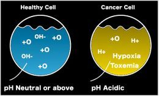

_
Benefits Of Uva Medicinal Tea
Approved by FDA Philippines with therapeutic claim!
Best natural antibiotic for inflammatory diseases of the entire urinary system, urethritis, cysts, bladder infections, vaginal infections, chronic gonorrhea, pyelonephritis - kidney infections, cysts, gravel, kidney stone, infections of prostate, BPH, prostate cancer, best natural pH booster - normalizer, arthritis, gout, hyperuricemia, diarrhea, bronchitis, widely used as an antibacterial, diuretic, astringent, antiseptic tonic. Uva tea detoxifies, disinfects and cleanses the whole body, while also promoting urine flow.
UVA-TEA AGAINST FIVE MAJOR CARCINOMA CELL LINES
- Research by Polish Academy of Science (Ryszard Amarrowicz, Prof Phd.D., D, Sc)
- Breast Carcinoma (MCF-7)
- Prostate Carcinoma (DU-145)
- Colon Carcinoma (HT-29)
- Melanoma (SK-MEL-5)
- Skin Carcinoma (MDA-MB-435)
Best organic natural tonic for skin care, whitening skin. Your skin will become softer and lighter, skin wrinkles and pimples will decrease. Feminine Wash, UV protector, Dermatitis, allergic reaction – hypersensitivity type, cold sores, herpes, astringent wash for cuts and scrapes, for back sprain, inhibits melanin production in vitro.
Gout Arthritis
An episode of gout arthritis attack is usually extremely painful, consisting of joint inflammation due to deposits of uric acid crystals in the joint fluid (synovial fluid) and joint lining (synovial lining). Intense joint inflammation occurs as white blood cells engulf the uric acid crystals, causing pain, heat, and redness of the joint tissues.
Normally, uric acid is dissolved in the blood and passes through the kidneys into the urine. But, when more uric acid is produced than the kidneys can eliminate, the elevated level is known as hyperuricemia. After years of sustained hyperuricemia, the body may store excess uric acid up to several times higher than the normal level. The uric acid may crystallize in joints and some other tissues. When the crystals accumulate in the joints they can set the stage for a painful attack of gout. Destroys our joints and bones, making us immovable.
When a person is experiencing a gout attack, the area is going to be red, swollen, and hot to the touch. The affected joints will become very stiff and there will be a high level of pain.
If the affected joints are the toes or the feet, then it will be very difficult to walk and even to get your shoes on.
Synthetic drugs cannot cure gout – ONLY ONE MEDICINE EFFECTIVELY CURE GOUT - UVA TEA!
High level of acids in blood cause:
Kidney failure, Kidney stone, Gout, Arthritis, Heart diseases, Stroke, Liver diseases, Cancer, diabetes, fibromyalgia.
The first effect of Uva medical tea, after we drink it, is that it greatly reduces the level of acid in the body, and then becomes a strong and powerful antibacterial agent which softens the crystals of uric acid, increases the mobility of joints, stimulates kidney function, which have the function of eliminating the acid from the blood. Joint inflammation calms down after the first 2-3 days. The pain will be reduced after the first day and will completely stop after 2-3 days.
Kidney
The kidneys are sophisticated reprocessing machines. Every day, a person's kidneys process about 200 quarts of blood to sift out about 2 quarts of waste products and extra water. The wastes and extra water become urine, which flows to the bladder through tubes called ureters. The bladder stores urine until releasing it through urination.
The kidneys release three important hormones:
1. Erythropoietin or EPO – stimulates the bone marrow to produce red blood cells.
2. Renin – regulates blood pressure
3. Calcitriol – the active form of vitamin D, which helps maintain calcium for bones and for normal chemical balance.
Protect the kidney from the constant attack of bacteria, high levels of acid in blood and urine. With Uva Tea treatment you will have a healthy and long-living kidneys which will function perfectly. Uva Tea prevents the formation of kidney stones, frequent inflammation, cysts. Do it in the early stages, when a health problem arises, otherwise it is usually too late and too expensive.
PYELONEPHRITIS
Pyelonephritis is a bacterial infection of one or both kidneys.
The causes of kidney inflammation: The majority of cases, inflammation of the kidneys caused by bacteria that comes from outside and travel through the urinary system through the urethra to the bladder, and finally from the bladder to the kidneys. In this case it is known as the growing infection. This may explain why women, whose urethra is shorter and closer to the anus, a potential source of bacteria, have kidney infections four times more frequent than men.
Escherichia coli (E. coli), a bacterium that is normally found in the large intestine, causes about 90% of kidney infections in people living within the community, but only about 50% of infections in hospitals. Infections usually occur in ascending form by "climbing" from the genital area to the bladder. With a healthy urinary tract, infection cannot reach the kidneys because ureter prevents it by the fact that urine stream washes out the infective agent, and by closing the ureter at the place of their entry to the bladder. However, any physical obstacle which prevents the flow of urine, such as kidney stones or enlargement of the prostate, or the return of urine from the bladder to the urethra, increases the chance of kidney infection.
FEMININE WASH
In a completely natural way, without any additives, excellent antibacterial remedy.
Protects the intimate part from a large number of bacteria, destroys the existing bacteria and keeps the good smell throughout the day, or night.
It's not just a simple feminine wash, it is a medical tea, from which you can make organic feminine wash with which you can prevent bacteria from reaching vagina, urethra, bladder and kidneys. By regularly washing the anus and vagina, your hygiene is complete and protects you from many serious illnesses and even death.
By drinking Uva Tea, your urinary tract will be clean and without bacteria, thus allowing smooth functioning of the kidneys. If there is no balanced ratio of positive and negative bacteria in vagina, it can lead to vaginal infections and even to sterility. So wash your intimate parts with Uva Feminine Wash, drink Uva Tea to cure vaginal infections, kidney and bladder infections.
URINARY TRACT INFECTIONS - UTI
Frequent urinary tract diseases or chronic inflammation of the urinary tract can lead to serious diseases, so don’t take it easy. UTI can lead to tragic outcomes, such as kidney failure, sterility, impotence, kidney, prostate and bladder cancer, etc.
Women are at higher risk of developing UTI than men, because the bladder is much closer to the vagina and anus. The female reproductive system is more susceptible to infections than it is the case with men.
Urinary infections are also known as urinary tract infections or UTI. As the name says, it is an infection caused by bacteria in the urinary tract. All parts of the urinary tract can be affected, but usually, bladder and urethra gets infected.
Antibiotics can in very rare cases completely destroy E. coli bacteria, bacteria mutate and become resistant. In the case of the treatment with UVA Tea, E coli bacteria are very easily and completely destroyed.
- The urinary tract infections include:
- Urethritis
- Inflammation of the bladder (cystitis)
- Inflammation of the kidneys (pyelonephritis)
To clarify immediately, the urethra is the urinary canal that carries urine from the bladder to the outside of the human body, and the ureters are canals that carry urine from the kidneys to the bladder.
Overall, the urinary infection occurs after the bacteria enter the urethra and begin to multiply in the bladder, after which the urine becomes infectious. When there is no infection, urine is sterile and there's no bacteria.
If the treatment doesn’t start on time, UTI or inflammation of the kidneys can cause irreversible kidney damage. Occasionally, pyelonephritis is permanent kidney inflammation that can leave scars in the kidneys and can lead to chronic renal failure. This kidney disease is most common in patients who are predisposed to have restored to them acute pyelonephritis. The infection can spread through the bloodstream, which causes sepsis that is often life threatening.
NEW - Total Price Calculator
Try out our Price Calculator and compare the prices based on the desired quantity. Click here
Uva Tea is very effective against E. Coli
In vitro against Proteus vulgaris, E. coli, Ureaplasma urealyticum, Mycoplasma hominis, Staphylo-coccus aureus, Pseudomonas aerginosa, Friedlander's pneumonia, Enterococcus faecalis, and Streptococcus strains, as well as against Candida albicans.
In short UVA tea is an excellent agent for the treatment of various gram Positive(gm+), gram Negative (gm-) infections and common viral infections.
Antibiotics can very seldom completely destroy E coli bacteria, bacteria mutate and become resistant. In the case of the Uva Tea treatment, very easily and completely destroys E coli bacteria.
pH Normalizer
Plenty of research showing the link between acidic pH and cancer. Cancer thrives in an acidic environment, and doesn't survive in an normal, more alkaline environment. So if you have cancer, your pH levels are low and your body is too acidic.
Taking action to make your body more alkaline is vital in the battle against cancer.
The majority of the foods and drinks we consume are acidic, such as meat, grains and sugar, with colas and other soft drinks being highly acidic. So unless you have been eating a very healthy diet, full of fresh fruit and vegetables, your body is way too acidic. Creating a very good environment for cancer to grow in. Too much acidity is an underlying factor in many degenerative diseases - diabetes, arthritis, heart diseases, fibromyalgia, weakening of the immune system, etc.
Prostate
The function of the prostate is to secrete a slightly acidic fluid, milky or white in appearance, that usually constitutes 50–75% of the volume of the semen along with spermatozoa and seminal vesicle fluid. Semen is made alkaline overall with the secretions from the other contributing glands, including, at least, the seminal vesicle fluid. The alkalinity of semen helps neutralize the acidity of the vaginal tract, prolonging the lifespan of sperm. The alkalization of semen is primarily accomplished through secretion from the seminal vesicles. With Uva Tea, prostatic fluid hasa better motility, longer survival and better protection of the genetic material.
Majority of men who are suffering from a prostate disease has a minor or major problems with their sexual function, certain methods of treatment of prostate disease such as cancer and BPH can lead to temporary or permanent impotence, according to research of top urologist Dr. Gordana Popovic and Dr Boro Vujasin, Department of Health of Serbia. In men over age 25, E. coli and other common bacteria most often cause prostatitis. E.Coli causes more than 85% of all UTIs.
Inflammation of the prostate is first step to the loss of potency and fertility.
Over the age of 30, in most of men, starts the increase of the size of the prostate. Usually it is a benign prostatic hyperplasia (BPH). The disease is very common – 50-90% of men aged 40-80 have signs of BPH. The biggest problem today is high resistance of E. coli bacteria to antibiotics, according to the British Institute of Health. The advantage of Uva medical tea compared with antibiotics, is manifold. Uva medical tea is very effective and completely destroys E. coli bacteria during the treatment of 7 days. Calms inflammation, swelling of the prostate, urinary canal becomes open, allowing normal urination and ejaculation, in addition to increasing fertility and potency in men.
A problem that threatens the fundamental function of a man can be prevented and fixed with Uva medicinal tea!
Uva Skin tonic
Uva tea skin tonic protects the skin against damage caused by free radicals and inhibits the formation of the melanin pigment, in other words, it reduces pigmentation. It is well tolerated by the skin, does not cause irritation, and has no known toxicity or side effects. It is the one of the safest Skin WHITENING TREATMENTS. Your skin will become soft and lighter, skin wrinkles will decrease. And at the same time your face and hands will be protected from the sun radiation (UV protection), in the completely natural way without harmful substances.